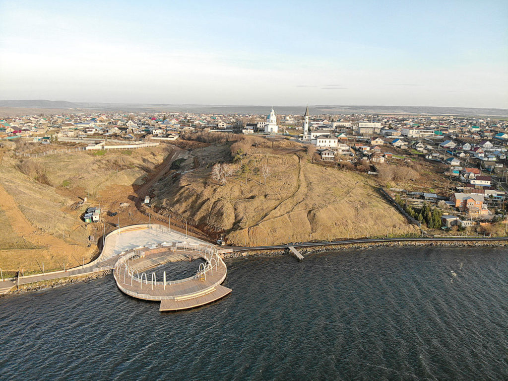

Заи́нск (тат. Зәй, чув. Хӗрӗс Ҫӗрпӳ, удм. Заинск) — город в Республике Татарстан, административный центр Заинского района. Расположен на реке Зай (бассейн Камы), в 287 км к востоку от Казани. Один из самых молодых городов республики, получивший статус города в 1978 году. Крупный центр энергетики: на территории города находится Заинская государственная районная электрическая станция (ГРЭС) — одна из крупнейших тепловых электростанций в Поволжье, установленной мощностью более 2,5 ГВт. Город также известен как центр нефтегазодобычи и является важным звеном в системе магистральных нефтепроводов.